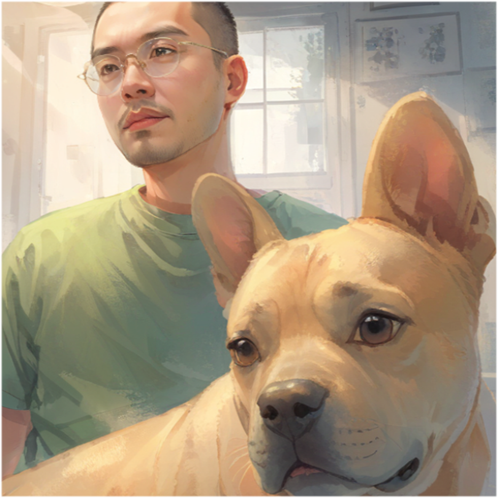

Illustration

Gender
♂️ - 男生
🕵️♂️ - 你不知道我是誰（初始蓋伏）
Goal
使用「雞」、「犬」讓一位研究生畢業或肄業
Ability
# 雞 -
即將發表雙色論文時，翻開角色，改為發表一篇紅 / 藍色論文在一位♀面前，並且自己發表垃圾論文。
# 犬 -
一位♂即將發表雙色論文時，覆蓋角色，改為發表一篇垃圾論文在他面前，並且自己發表紅 / 藍色論文。
## 無形の力 -
將自己一篇已發表論文，發表在一位研究生面前。
Trivia
在一座深山裡，有間聲名遠播的修道寺，傳說凡進入其中修行的生物，最終都能習得驚世技藝，飛黃騰達。這裡聚集了兩類修行者：「雞」與「犬」
「雞」數量稀少，羽毛鮮亮，聲音柔細，走到哪裡總是引人注目。
山林裡的烏龜大師、猛虎師兄與靈鶴師姊總是格外關愛「雞」，無論是研究卡關或是心理健康，都會主動伸出羽翼安撫：
「程式難寫？我幫你看看」、「要不要一起比賽？師兄帶你們贏」、「多刷刷 LeetCode，以後很有幫助喔！」
即使偶有犯錯，大家也總是拍拍背，說聲「沒關係，慢慢來」
「犬」則不一樣，數量眾多，身形各異，吠聲嘹亮。牠們從小被教導要咬緊牙根、自力更生。
「問題卡住？先找找文獻好嗎」、「你可是要唸博士的人耶…」、「投稿論文？別忘了師兄一份」
當然也不是沒有幫助，只是他們得先表現出足夠的拼搏、足夠的狼狽。過程中師兄遞來一根骨頭，功成名就勿忘我。
時間久了，「雞」中有些逐漸展翅飛翔，成就耀眼；「犬」則咬著筆、夾著尾、埋頭苦幹。沒有人會說這樣不公平，因為一切看起來都理所當然。但有時候，「犬」心裡會冒出一絲疑問：「師兄明明說過不怕困難有他在，但是每次找他卻總被草草打發」
然而，「雞」也不總是幸福快樂。比賽得獎了，還得早起穿正裝跑大老遠領獎… 師兄給我一堆資料，看不完好煩還要刷 LeetCode … 論文一起發表，還得準備出國報告…
這些來自成就的煩惱，你說是靠自己嗎？也許吧，只是有時那股「無形の力」來得太剛好。
這間修道寺依然日復一日運作著，「雞」和「犬」每天清晨一同進山、夜半一起歸巢。表面看起來風平浪靜，偶爾還能聽見笑聲。
但若你仔細聽，有時候「雞」啼中夾雜了自傲煩擾，而「犬」吠中藏著心累疲憊…
#AIoT #PhD
Relationship